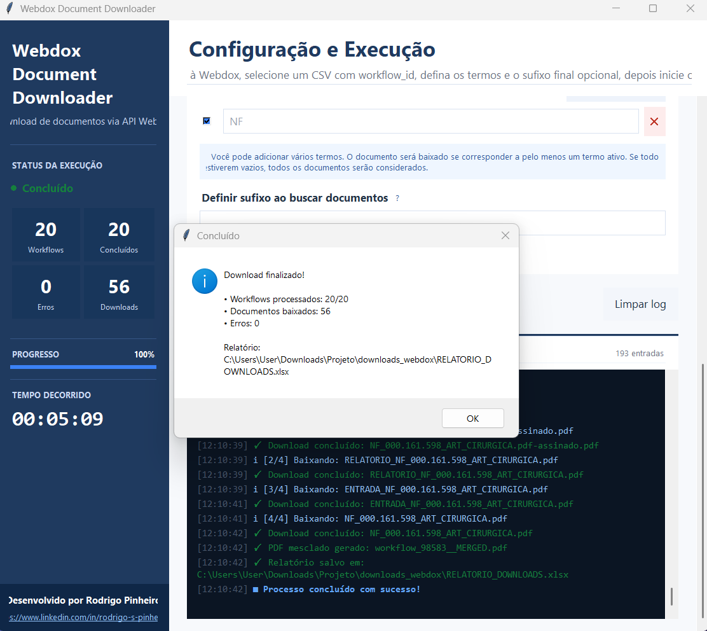

N8N
SAAS
PYTHON
BI TOOLS

Automação de Download de Documentos
Quem já precisou baixar e organizar centenas de documentos, em qualquer plataforma, um a um para uma auditoria ou backup estruturado, sabe exatamente do gargalo operacional que estou falando. Neste projeto apliquei engenharia e automação para resolver essa ineficiência em áreas de Gestão de Contratos. Construí o Webdox Downloader, uma solução em Python focada em orquestração de API, processamento concorrente e rastreabilidade.
Metodologia de Automação
Para a construção de ecossistemas inteligentes e fluxos de dados escaláveis, utilizo uma abordagem que integra n8n, Python e ferramentas de BI seguindo este ciclo:
- Mapeamento e Integração (n8n & SaaS): Conexão de APIs e plataformas SaaS para centralizar o fluxo de informações e eliminar tarefas manuais.
- Processamento de Lógica Complexa (Python): Desenvolvimento de scripts customizados para tratamento de dados e automações que exigem maior robustez técnica.
- Estruturação e Governança: Organização e limpeza dos dados processados, garantindo integridade e segurança em bancos de dados ou repositórios cloud.
- Visualização e Insights (BI Tools): Transformação de dados brutos em dashboards dinâmicos para monitoramento em tempo real e suporte à decisão.
- Monitoramento e Otimização: Implementação de fluxos de erro e refinamento contínuo para garantir a resiliência da arquitetura.